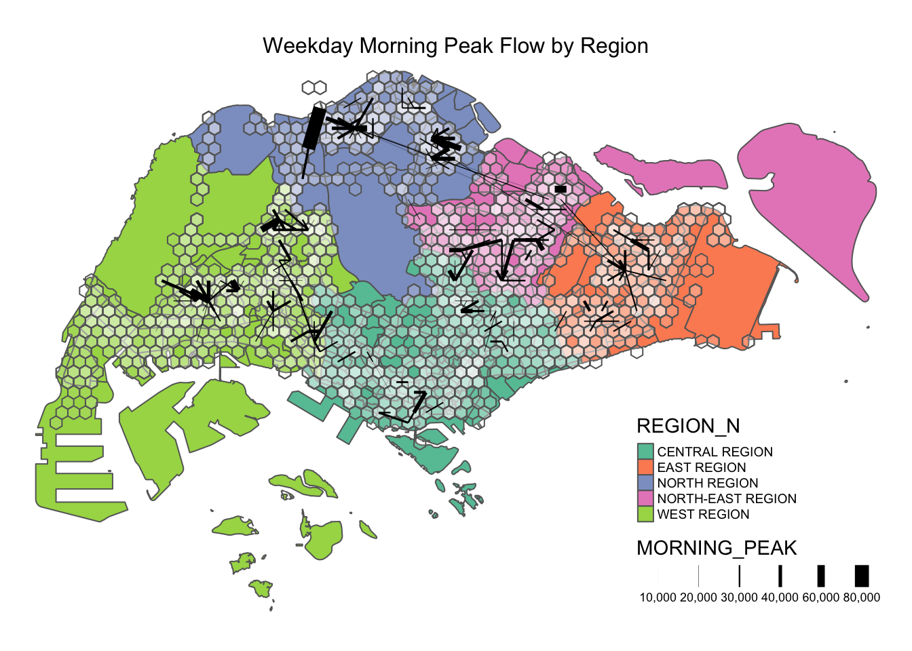
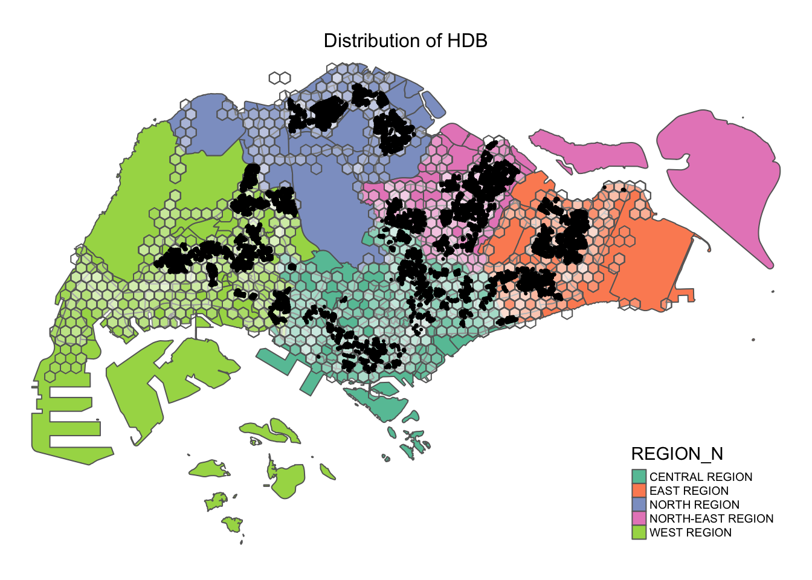
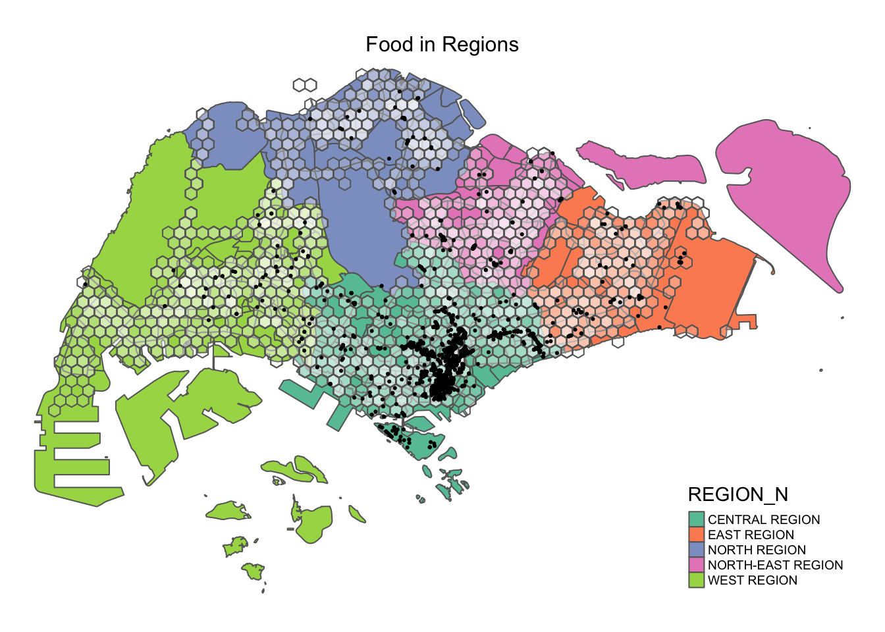
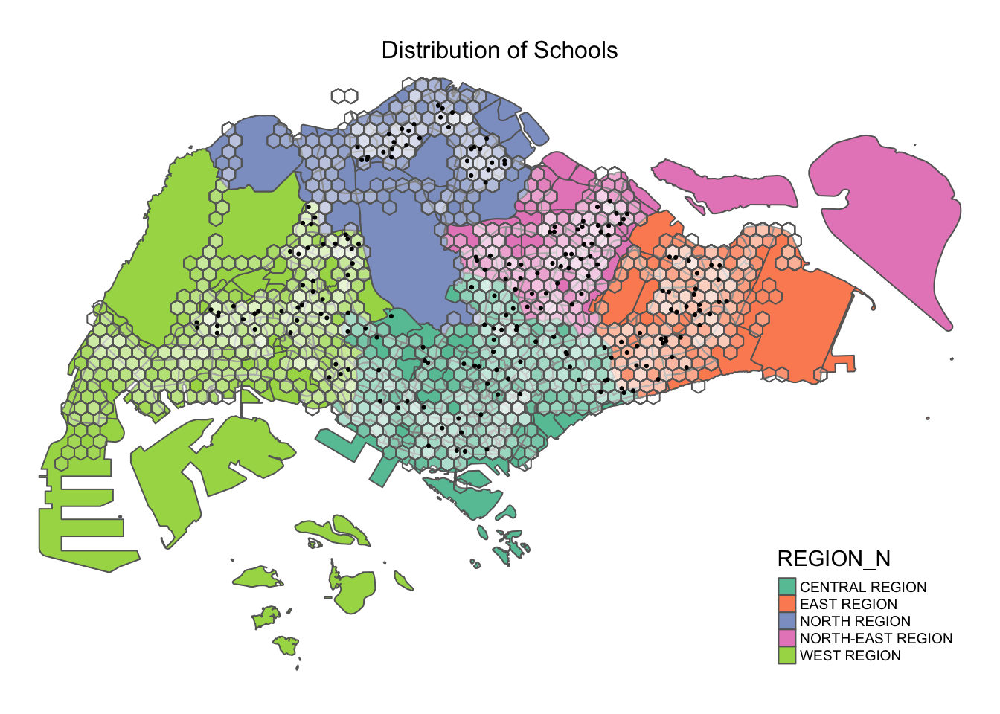

pacman::p_load(tmap, sf, sp, DT, stplanr, tidyverse, reshape2, performance, ggpubr, olsrr, corrplot, GWmodel, gtsummary)Applied Spatial Interaction Models
A case study of Singapore public bus commuter flows
1. Overview
Urban mobility and public transport service planning are critical challenges for transport operators and urban planners. Questions on the residents commute patterns and the bus service demands are traditionally explored through commuter surveys. Despite providing valuable insights, these surveys are costly, time-consuming, and the data require extensive cleaning and analysis, often rendering the findings outdated by the time they are ready for use.
In contrast, the digitization of urban infrastructure, such as public buses, trains, and roads, offers a wealth of data that can capture movement patterns over time and space. The advent of pervasive computing technologies like GPS and smart cards for transport has led to an explosion of geospatial data. However, the capability to effectively analyze this data and extract valuable information is not in the same pace, leading to suboptimal returns on investment in data collection and management.
This exercise is propelled by two key motivators: the under utilization of the increasing volumes of open data for policy-making, and the scarcity of practical research demonstrating the use of geospatial data science and analysis (GDSA) in decision-making processes.
2. Task
Geospatial Data Science
Derive an analytical hexagon data of 375m to represent the traffic analysis zone.
Construct an OD matrix of commuter flows for the following time intervals:
- Weekday morning peak from 6am to 9am
- Weekday evening peak from 5pm to 8pm
- Weekend/holiday morning peak from 11am to 2pm
- Weekend/holiday evening peak from 4pm to 7pm
Display the O-D flows of the passenger trips by using appropriate geovisualisation methods.
Describe the spatial patterns revealed by the geovisualisation.
Assemble at least three propulsive and three attractiveness variables by using aspatial and geospatial from publicly available sources.
Compute a distance matrix by using the analytical hexagon data.
Spatial Interaction Modelling
Calibrate spatial interactive models to determine factors affecting urban commuting flows at the selected time interval.
Present the modelling results by using appropriate geovisualisation and graphical visualisation methods.
With reference to the Spatial Interaction Model output tables, maps and data visualisation prepared, describe the modelling results.
2. Load packages
The analysis involves the following packages:
sf handles spatial data. tidyverse handles attribute data. DT enables R data objects (matrices or data frames) to be displayed as tables on HTML pages. stplanr analyses OD matrix. reshape2 restructures and aggregates data. performance contains utilities for computing measures to assess model quality. ggpubr arrange and annotate multiple plots. olsrr builds OLS and performing diagnostics tests. GWmodel calibrate geographical weighted family of models. corrplot enables multivariate data visualisation and analysis. tmap plots choropleth maps.
3. Import data
We will be using the following geospatial (busstop, mpsz) and aspatial (odbus) datasets.
busstop is a geospatial dataset containing the detailed information for all bus stops currently serviced by buses, including bus stop code, road name, description, location coordinates.
The output indicates that the geospatial objects are point features. There are 5161 features and 3 fields. It is in SVY21 projected coordinates system with XY dimension.
Source: LTA DataMall (Postman URL)
busstop <- st_read(dsn = "data/geospatial", layer = "BusStop") %>%
st_transform(crs = 3414)Reading layer `BusStop' from data source
`/Users/chockwankee/Documents/chockwk/ISSS624_Geospatial_Analytics/Take_home_Ex/Take_home_Ex02/data/geospatial'
using driver `ESRI Shapefile'
Simple feature collection with 5161 features and 3 fields
Geometry type: POINT
Dimension: XY
Bounding box: xmin: 3970.122 ymin: 26482.1 xmax: 48284.56 ymax: 52983.82
Projected CRS: SVY21glimpse(busstop)Rows: 5,161
Columns: 4
$ BUS_STOP_N <chr> "22069", "32071", "44331", "96081", "11561", "66191", "2338…
$ BUS_ROOF_N <chr> "B06", "B23", "B01", "B05", "B05", "B03", "B02A", "B02", "B…
$ LOC_DESC <chr> "OPP CEVA LOGISTICS", "AFT TRACK 13", "BLK 239", "GRACE IND…
$ geometry <POINT [m]> POINT (13576.31 32883.65), POINT (13228.59 44206.38),…mpsz is is a geospatial dataset of the Master Plan 2019, a forward looking guiding plan for Singapore’s development in the medium term over the next 10 to 15 years published in 2019.
The output indicates that the geospatial objects are multipolygon features. There are 332 features and 6 fields. It is in WGS84 projected coordinates system with XY dimension.
Source: URA (Download here)
mpsz <- st_read(dsn = "data/geospatial", layer = "MPSZ-2019") %>%
st_transform(crs=3414)Reading layer `MPSZ-2019' from data source
`/Users/chockwankee/Documents/chockwk/ISSS624_Geospatial_Analytics/Take_home_Ex/Take_home_Ex02/data/geospatial'
using driver `ESRI Shapefile'
Simple feature collection with 332 features and 6 fields
Geometry type: MULTIPOLYGON
Dimension: XY
Bounding box: xmin: 103.6057 ymin: 1.158699 xmax: 104.0885 ymax: 1.470775
Geodetic CRS: WGS 84glimpse(mpsz)Rows: 332
Columns: 7
$ SUBZONE_N <chr> "MARINA EAST", "INSTITUTION HILL", "ROBERTSON QUAY", "JURON…
$ SUBZONE_C <chr> "MESZ01", "RVSZ05", "SRSZ01", "WISZ01", "MUSZ02", "MPSZ05",…
$ PLN_AREA_N <chr> "MARINA EAST", "RIVER VALLEY", "SINGAPORE RIVER", "WESTERN …
$ PLN_AREA_C <chr> "ME", "RV", "SR", "WI", "MU", "MP", "WI", "WI", "SI", "SI",…
$ REGION_N <chr> "CENTRAL REGION", "CENTRAL REGION", "CENTRAL REGION", "WEST…
$ REGION_C <chr> "CR", "CR", "CR", "WR", "CR", "CR", "WR", "WR", "CR", "CR",…
$ geometry <MULTIPOLYGON [m]> MULTIPOLYGON (((33222.98 29..., MULTIPOLYGON (…busstop_mpsz <- st_intersection(busstop, mpsz) %>%
select(BUS_STOP_N, SUBZONE_C)
glimpse(busstop_mpsz)Rows: 5,156
Columns: 3
$ BUS_STOP_N <chr> "13099", "13089", "06151", "13211", "13139", "13109", "1311…
$ SUBZONE_C <chr> "RVSZ05", "RVSZ05", "SRSZ01", "SRSZ01", "SRSZ01", "SRSZ01",…
$ geometry <POINT [m]> POINT (28696.2 30905.64), POINT (28303.29 30901.45), …odbus is an aspatial dataset containing the number of trips by weekdays and weekends from origin to destination bus stops. It reflects the passenger trip traffic and the most recent dataset from October 2023 will be used.
The output indicates 5,694,297 records and 7 fields. The bus stop codes are converted into factor for data handling.
Source: LTA DataMall (Postman URL)
odbus = read_csv("data/aspatial/origin_destination_bus_202310.csv")
glimpse(odbus)Rows: 5,694,297
Columns: 7
$ YEAR_MONTH <chr> "2023-10", "2023-10", "2023-10", "2023-10", "2023-…
$ DAY_TYPE <chr> "WEEKENDS/HOLIDAY", "WEEKDAY", "WEEKENDS/HOLIDAY",…
$ TIME_PER_HOUR <dbl> 16, 16, 14, 14, 17, 17, 17, 7, 14, 14, 10, 20, 20,…
$ PT_TYPE <chr> "BUS", "BUS", "BUS", "BUS", "BUS", "BUS", "BUS", "…
$ ORIGIN_PT_CODE <chr> "04168", "04168", "80119", "80119", "44069", "2028…
$ DESTINATION_PT_CODE <chr> "10051", "10051", "90079", "90079", "17229", "2014…
$ TOTAL_TRIPS <dbl> 3, 5, 3, 5, 4, 1, 24, 2, 1, 7, 3, 2, 5, 1, 1, 1, 1…# odbusstop <- read_rds("data/rds/odbusstop.rds")
# glimpse(odbusstop)4. Extract Commuting Flow
odbus6_9 <- odbus %>%
filter(DAY_TYPE == "WEEKDAY") %>%
filter(TIME_PER_HOUR >= 6 & TIME_PER_HOUR <= 9) %>%
group_by(ORIGIN_PT_CODE, DESTINATION_PT_CODE) %>%
summarise(TRIPS = sum(TOTAL_TRIPS))
glimpse(odbus6_9)Rows: 242,208
Columns: 3
Groups: ORIGIN_PT_CODE [5,029]
$ ORIGIN_PT_CODE <fct> 01012, 01012, 01012, 01012, 01012, 01012, 01012, 0…
$ DESTINATION_PT_CODE <fct> 01112, 01113, 01121, 01211, 01311, 07371, 60011, 6…
$ TRIPS <dbl> 290, 118, 77, 118, 165, 14, 30, 16, 35, 26, 2, 8, …odbus17_20 <- odbus %>%
filter(DAY_TYPE == "WEEKDAY") %>%
filter(TIME_PER_HOUR >= 17 & TIME_PER_HOUR <= 20) %>%
group_by(ORIGIN_PT_CODE, DESTINATION_PT_CODE) %>%
summarise(TRIPS = sum(TOTAL_TRIPS))odbus11_14 <- odbus %>%
filter(DAY_TYPE == "WEEKENDS/HOLIDAY") %>%
filter(TIME_PER_HOUR >= 11 & TIME_PER_HOUR <= 14) %>%
group_by(ORIGIN_PT_CODE, DESTINATION_PT_CODE) %>%
summarise(TRIPS = sum(TOTAL_TRIPS))odbus16_19 <- odbus %>%
filter(DAY_TYPE == "WEEKENDS/HOLIDAY") %>%
filter(TIME_PER_HOUR >= 16 & TIME_PER_HOUR <= 19) %>%
group_by(ORIGIN_PT_CODE, DESTINATION_PT_CODE) %>%
summarise(TRIPS = sum(TOTAL_TRIPS))4. Create Spatial Grids
area_hexagon_grid <- st_make_grid(busstop_mpsz,
cellsize = 750,
crs = 3414,
what = "polygons",
square = FALSE)
area_hexagon_gridGeometry set for 2299 features
Geometry type: POLYGON
Dimension: XY
Bounding box: xmin: 3220.122 ymin: 26049.09 xmax: 48970.12 ymax: 50947.32
Projected CRS: SVY21 / Singapore TM
First 5 geometries:hexagon_grid_sf = st_sf(area_hexagon_grid) %>%
mutate(INDEX = row_number()) %>%
rename(geometry = area_hexagon_grid,
index = INDEX)
glimpse(hexagon_grid_sf)Rows: 2,299
Columns: 2
$ index <int> 1, 2, 3, 4, 5, 6, 7, 8, 9, 10, 11, 12, 13, 14, 15, 16, 17, 18…
$ geometry <POLYGON [m]> POLYGON ((3595.122 26698.61..., POLYGON ((3595.122 27…hexagon_busstop <- st_join(hexagon_grid_sf, busstop,
by = c("geometry" = "geometry")) %>%
drop_na()
glimpse(hexagon_busstop)Rows: 5,151
Columns: 5
$ index <int> 21, 40, 42, 42, 60, 61, 61, 61, 61, 62, 78, 79, 80, 80, 80,…
$ BUS_STOP_N <chr> "25059", "25751", "26379", "26369", "25741", "26399", "2571…
$ BUS_ROOF_N <chr> "UNK", "B02D", "NIL", "NIL", "B03", "NIL", "B01C", "B02C", …
$ LOC_DESC <chr> "AFT TUAS STH BLVD", "BEF TUAS STH AVE 14", "YONG NAM", "SE…
$ geometry <POLYGON [m]> POLYGON ((3970.122 27348.13..., POLYGON ((4345.122 …od <- st_join(hexagon_grid_sf, busstop_mpsz,
by = c("geometry" = "geometry"))
glimpse(od)Rows: 6,624
Columns: 4
$ index <int> 1, 2, 3, 4, 5, 6, 7, 8, 9, 10, 11, 12, 13, 14, 15, 16, 17, …
$ BUS_STOP_N <chr> NA, NA, NA, NA, NA, NA, NA, NA, NA, NA, NA, NA, NA, NA, NA,…
$ SUBZONE_C <chr> NA, NA, NA, NA, NA, NA, NA, NA, NA, NA, NA, NA, NA, NA, NA,…
$ geometry <POLYGON [m]> POLYGON ((3595.122 26698.61..., POLYGON ((3595.122 …5. Prepare OD Matrix
od1 <- left_join(odbus6_9, od,
by = c("ORIGIN_PT_CODE" = "BUS_STOP_N")) %>%
rename(ORIGIN_BS = ORIGIN_PT_CODE,
DESTIN_BS = DESTINATION_PT_CODE,
ORIGIN_SZ = SUBZONE_C)
od1$ORIGIN_BS <- as.factor(od1$ORIGIN_BS)
glimpse(od1)Rows: 242,944
Columns: 6
Groups: ORIGIN_BS [5,029]
$ ORIGIN_BS <fct> 01012, 01012, 01012, 01012, 01012, 01012, 01012, 01012, 0101…
$ DESTIN_BS <fct> 01112, 01113, 01121, 01211, 01311, 07371, 60011, 60021, 6003…
$ TRIPS <dbl> 290, 118, 77, 118, 165, 14, 30, 16, 35, 26, 2, 8, 1, 2, 2, 4…
$ index <int> 1334, 1334, 1334, 1334, 1334, 1334, 1334, 1334, 1334, 1334, …
$ ORIGIN_SZ <chr> "RCSZ10", "RCSZ10", "RCSZ10", "RCSZ10", "RCSZ10", "RCSZ10", …
$ geometry <POLYGON [m]> POLYGON ((29845.12 30595.72..., POLYGON ((29845.12 3…duplicate <- od1 %>%
group_by_all() %>%
filter(n()>1) %>%
ungroup()
od1 <- unique(od1)
glimpse(od1)Rows: 242,499
Columns: 6
Groups: ORIGIN_BS [5,029]
$ ORIGIN_BS <fct> 01012, 01012, 01012, 01012, 01012, 01012, 01012, 01012, 0101…
$ DESTIN_BS <fct> 01112, 01113, 01121, 01211, 01311, 07371, 60011, 60021, 6003…
$ TRIPS <dbl> 290, 118, 77, 118, 165, 14, 30, 16, 35, 26, 2, 8, 1, 2, 2, 4…
$ index <int> 1334, 1334, 1334, 1334, 1334, 1334, 1334, 1334, 1334, 1334, …
$ ORIGIN_SZ <chr> "RCSZ10", "RCSZ10", "RCSZ10", "RCSZ10", "RCSZ10", "RCSZ10", …
$ geometry <POLYGON [m]> POLYGON ((29845.12 30595.72..., POLYGON ((29845.12 3…od1 <- left_join(od1, od,
by = c("DESTIN_BS" = "BUS_STOP_N")) %>%
rename(DESTIN_SZ = SUBZONE_C,
ORIGIN_INDEX = index.x,
ORIGIN_GEOMETRY = geometry.x,
DESTIN_INDEX = index.y,
DESTIN_GEOMETRY = geometry.y) %>%
drop_na() %>%
group_by(ORIGIN_SZ, DESTIN_SZ)
od1$DESTIN_BS <- as.factor(od1$DESTIN_BS)
glimpse(od1)Rows: 238,767
Columns: 9
Groups: ORIGIN_SZ, DESTIN_SZ [21,079]
$ ORIGIN_BS <fct> 01012, 01012, 01012, 01012, 01012, 01012, 01012, 01012…
$ DESTIN_BS <fct> 01112, 01113, 01121, 01211, 01311, 07371, 60011, 60021…
$ TRIPS <dbl> 290, 118, 77, 118, 165, 14, 30, 16, 35, 26, 2, 8, 1, 2…
$ ORIGIN_INDEX <int> 1334, 1334, 1334, 1334, 1334, 1334, 1334, 1334, 1334, …
$ ORIGIN_SZ <chr> "RCSZ10", "RCSZ10", "RCSZ10", "RCSZ10", "RCSZ10", "RCS…
$ ORIGIN_GEOMETRY <POLYGON [m]> POLYGON ((29845.12 30595.72..., POLYGON ((2984…
$ DESTIN_INDEX <int> 1354, 1354, 1392, 1392, 1411, 1411, 1393, 1431, 1450, …
$ DESTIN_SZ <chr> "RCSZ10", "DTSZ01", "RCSZ04", "KLSZ09", "KLSZ06", "KLS…
$ DESTIN_GEOMETRY <POLYGON [m]> POLYGON ((30220.12 31245.24..., POLYGON ((3022…duplicate <- od1 %>%
group_by_all() %>%
filter(n()>1) %>%
ungroup()
od1 <- unique(od1)
glimpse(od1)Rows: 238,383
Columns: 9
Groups: ORIGIN_SZ, DESTIN_SZ [21,079]
$ ORIGIN_BS <fct> 01012, 01012, 01012, 01012, 01012, 01012, 01012, 01012…
$ DESTIN_BS <fct> 01112, 01113, 01121, 01211, 01311, 07371, 60011, 60021…
$ TRIPS <dbl> 290, 118, 77, 118, 165, 14, 30, 16, 35, 26, 2, 8, 1, 2…
$ ORIGIN_INDEX <int> 1334, 1334, 1334, 1334, 1334, 1334, 1334, 1334, 1334, …
$ ORIGIN_SZ <chr> "RCSZ10", "RCSZ10", "RCSZ10", "RCSZ10", "RCSZ10", "RCS…
$ ORIGIN_GEOMETRY <POLYGON [m]> POLYGON ((29845.12 30595.72..., POLYGON ((2984…
$ DESTIN_INDEX <int> 1354, 1354, 1392, 1392, 1411, 1411, 1393, 1431, 1450, …
$ DESTIN_SZ <chr> "RCSZ10", "DTSZ01", "RCSZ04", "KLSZ09", "KLSZ06", "KLS…
$ DESTIN_GEOMETRY <POLYGON [m]> POLYGON ((30220.12 31245.24..., POLYGON ((3022…od1 <- od1[od1$ORIGIN_SZ!=od1$DESTIN_SZ,]
head(od1)# A tibble: 6 × 9
# Groups: ORIGIN_SZ, DESTIN_SZ [5]
ORIGIN_BS DESTIN_BS TRIPS ORIGIN_INDEX ORIGIN_SZ ORIGIN_GEOMETRY
<fct> <fct> <dbl> <int> <chr> <POLYGON [m]>
1 01012 01113 118 1334 RCSZ10 ((29845.12 30595.72, 29470.1…
2 01012 01121 77 1334 RCSZ10 ((29845.12 30595.72, 29470.1…
3 01012 01211 118 1334 RCSZ10 ((29845.12 30595.72, 29470.1…
4 01012 01311 165 1334 RCSZ10 ((29845.12 30595.72, 29470.1…
5 01012 07371 14 1334 RCSZ10 ((29845.12 30595.72, 29470.1…
6 01012 60011 30 1334 RCSZ10 ((29845.12 30595.72, 29470.1…
# ℹ 3 more variables: DESTIN_INDEX <int>, DESTIN_SZ <chr>,
# DESTIN_GEOMETRY <POLYGON [m]>od1_data <- od1 %>%
drop_na() %>%
group_by(ORIGIN_INDEX, DESTIN_INDEX) %>%
summarise(MORNING_PEAK = sum(TRIPS))
glimpse(od1_data)Rows: 63,885
Columns: 3
Groups: ORIGIN_INDEX [812]
$ ORIGIN_INDEX <int> 21, 21, 21, 40, 40, 40, 42, 42, 42, 42, 42, 42, 60, 60, 6…
$ DESTIN_INDEX <int> 140, 159, 160, 80, 140, 159, 101, 102, 121, 122, 141, 368…
$ MORNING_PEAK <dbl> 3, 93, 1, 2, 2, 40, 2, 2, 2, 62, 31, 16, 23, 1, 38, 15, 4…flowLine <- od1_data %>%
od2line(od, zone_code = "index")tmap_mode("plot")
# Plot the base layer with mpsz areas filled with colors based on PLN_AREA_N
tm_shape(mpsz) +
tm_polygons(col = "REGION_N", palette = "Set2") +
tm_shape(hexagon_busstop) +
tm_polygons(col = "white", alpha = 0.1) +
flowLine %>%
filter(MORNING_PEAK >= 10000) %>%
tm_shape() +
tm_lines(lwd = "MORNING_PEAK", style = "quantile",
scale = c(0.1, 1, 3, 5, 7, 10), n = 6, alpha = 1) +
tm_layout(main.title = "Weekday Morning Peak Flow by Region",
main.title.position = "center",
main.title.size = 1,
legend.position = c("right", "bottom"),
legend.outside = FALSE,
legend.text.size = 0.6,
frame = FALSE)
tmap_mode("plot")
tm_shape(mpsz) +
tm_polygons(col = "PLN_AREA_N", palette = "Set3") +
tm_shape(hexagon_busstop) +
tm_polygons(col = "white", alpha = 0.1) +
flowLine %>%
filter(MORNING_PEAK >= 10000) %>%
tm_shape() +
tm_lines(lwd = "MORNING_PEAK", style = "quantile",
scale = c(0.1, 1, 3, 5, 7, 10), n = 6, alpha = 1) +
tm_layout(main.title = "Weekday Morning Peak Flow by Planning Area",
main.title.position = "center",
main.title.size = 1,
legend.show = FALSE,
frame = FALSE)
6. Assemble propulsive and attractiveness variables
Source: Prof Kam
The output indicates that the geospatial objects are point features. There are 6550 features and 3 fields. It is in SVY21 projected coordinates system with XY dimension.
business <- st_read(dsn = "data/geospatial", layer = "Business") %>%
st_transform(crs = 3414)Reading layer `Business' from data source
`/Users/chockwankee/Documents/chockwk/ISSS624_Geospatial_Analytics/Take_home_Ex/Take_home_Ex02/data/geospatial'
using driver `ESRI Shapefile'
Simple feature collection with 6550 features and 3 fields
Geometry type: POINT
Dimension: XY
Bounding box: xmin: 3669.148 ymin: 25408.41 xmax: 47034.83 ymax: 50148.54
Projected CRS: SVY21 / Singapore TMglimpse(business)Rows: 6,550
Columns: 4
$ POI_NAME <chr> "JOHN CHEN", "TROPICAL INDUSTRIAL BUILDING", "LIAN CHEONG I…
$ POI_ST_NUM <chr> "6", "14", "12", NA, "2", "21", "68", "68", NA, "14", "10",…
$ POI_ST_NAM <chr> "LITTLE RD", "LITTLE RD", "LITTLE RD", NA, "LITTLE RD", "LO…
$ geometry <POINT [m]> POINT (33818.36 35620.16), POINT (33770.51 35610.2), …hexagon_busstop$BUSINESS_COUNT <- lengths(st_intersects(hexagon_busstop, business))
summary(hexagon_busstop$BUSINESS_COUNT) Min. 1st Qu. Median Mean 3rd Qu. Max.
0.000 0.000 1.000 7.477 7.000 97.000 tm_shape(mpsz) +
tm_polygons(col = "REGION_N", palette = "Set2") +
tm_shape(hexagon_busstop) +
tm_polygons(col = "white", alpha = 0.1) +
tm_shape(business) +
tm_dots(col = "black") +
tm_layout(main.title = "Business in Regions",
main.title.position = "center",
main.title.size = 1,
legend.position = c("right", "bottom"),
legend.outside = FALSE,
legend.text.size = 0.6,
frame = FALSE)Source: Prof Kam
The output indicates that the geospatial objects are point features. There are 1919 features and 3 fields. It is in SVY21 projected coordinates system with XY dimension.
food <- st_read(dsn = "data/geospatial", layer = "F&B") %>%
st_transform(crs = 3414)Reading layer `F&B' from data source
`/Users/chockwankee/Documents/chockwk/ISSS624_Geospatial_Analytics/Take_home_Ex/Take_home_Ex02/data/geospatial'
using driver `ESRI Shapefile'
Simple feature collection with 1919 features and 3 fields
Geometry type: POINT
Dimension: XY
Bounding box: xmin: 6010.495 ymin: 25343.27 xmax: 45462.43 ymax: 48796.21
Projected CRS: SVY21 / Singapore TMglimpse(food)Rows: 1,919
Columns: 4
$ POI_NAME <chr> "KHEL", "I PUB", "LARK LOUNGE & NITE-CLUB", "CHAKRAVARTHY",…
$ POI_ST_NUM <chr> "141", "14", "195", "195", "48", "36", "10", "697", "11", "…
$ POI_ST_NAM <chr> "KITCHENER RD", "CHUN TIN RD", "LAVENDER ST", "LAVENDER ST"…
$ geometry <POINT [m]> POINT (30654.44 32466.51), POINT (21515.34 36007.18),…hexagon_busstop$FOOD_COUNT <- lengths(st_intersects(hexagon_busstop, food))
summary(hexagon_busstop$FOOD_COUNT) Min. 1st Qu. Median Mean 3rd Qu. Max.
0.000 0.000 0.000 3.035 1.000 133.000 tm_shape(mpsz) +
tm_polygons(col = "REGION_N", palette = "Set2") +
tm_shape(hexagon_busstop) +
tm_polygons(col = "white", alpha = 0.1) +
tm_shape(food) +
tm_dots(col = "black") +
tm_layout(main.title = "Food in Regions",
main.title.position = "center",
main.title.size = 1,
legend.position = c("right", "bottom"),
legend.outside = FALSE,
legend.text.size = 0.6,
frame = FALSE)
Source: Prof Kam
The output indicates that the geospatial objects are point features. There are 1919 features and 3 fields. It is in SVY21 projected coordinates system with XY dimension.
retails <- st_read(dsn = "data/geospatial", layer = "Retails") %>%
st_transform(crs = 3414)Reading layer `Retails' from data source
`/Users/chockwankee/Documents/chockwk/ISSS624_Geospatial_Analytics/Take_home_Ex/Take_home_Ex02/data/geospatial'
using driver `ESRI Shapefile'
Simple feature collection with 37635 features and 3 fields
Geometry type: POINT
Dimension: XY
Bounding box: xmin: 4737.982 ymin: 25171.88 xmax: 48265.04 ymax: 50135.28
Projected CRS: SVY21 / Singapore TMglimpse(retails)Rows: 37,635
Columns: 4
$ POI_NAME <chr> "TIAN KEE & CO", "PEOPLE TRADITIONAL CHINESE MEDICAL", "RIV…
$ POI_ST_NUM <chr> "12", "12", NA, NA, "588", "243", "208", "267", "231", "158…
$ POI_ST_NAM <chr> "DAKOTA CRES", "DAKOTA CRES", NA, NA, "SERANGOON RD", "ALEX…
$ geometry <POINT [m]> POINT (33713.83 32023.15), POINT (33713.83 32023.15),…hexagon_busstop$RETAIL_COUNT <- lengths(st_intersects(hexagon_busstop, retails))
summary(hexagon_busstop$RETAIL_COUNT) Min. 1st Qu. Median Mean 3rd Qu. Max.
0.00 4.00 17.00 61.04 59.00 1678.00 tm_shape(mpsz) +
tm_polygons(col = "REGION_N", palette = "Set2") +
tm_shape(hexagon_busstop) +
tm_polygons(col = "white", alpha = 0.1) +
tm_shape(retails) +
tm_dots(col = "black") +
tm_layout(main.title = "Distribution of Retails",
main.title.position = "center",
main.title.size = 1,
legend.position = c("right", "bottom"),
legend.outside = FALSE,
legend.text.size = 0.6,
frame = FALSE)Source: LTA DataMall
The output indicates that the geospatial objects are point features. There are 1919 features and 3 fields. It is in SVY21 projected coordinates system with XY dimension.
train <- st_read(dsn = "data/geospatial", layer = "Train_Station_Exit_Layer") %>%
st_transform(crs = 3414)Reading layer `Train_Station_Exit_Layer' from data source
`/Users/chockwankee/Documents/chockwk/ISSS624_Geospatial_Analytics/Take_home_Ex/Take_home_Ex02/data/geospatial'
using driver `ESRI Shapefile'
Simple feature collection with 565 features and 2 fields
Geometry type: POINT
Dimension: XY
Bounding box: xmin: 6134.086 ymin: 27499.7 xmax: 45356.36 ymax: 47865.92
Projected CRS: SVY21glimpse(train)Rows: 565
Columns: 3
$ stn_name <chr> "MACPHERSON MRT STATION", "MACPHERSON MRT STATION", "MACPHER…
$ exit_code <chr> "Exit A", "Exit B", "Exit C", "Exit B", "Exit A", "Exit A", …
$ geometry <POINT [m]> POINT (34285.07 34322.99), POINT (34382.15 34231.9), P…hexagon_busstop$TRAIN_COUNT <- lengths(st_intersects(hexagon_busstop, train))
summary(hexagon_busstop$TRAIN_COUNT) Min. 1st Qu. Median Mean 3rd Qu. Max.
0.0000 0.0000 0.0000 0.9643 1.0000 13.0000 tm_shape(mpsz) +
tm_polygons(col = "REGION_N", palette = "Set2") +
tm_shape(hexagon_busstop) +
tm_polygons(col = "white", alpha = 0.1) +
tm_shape(train) +
tm_dots(col = "black") +
tm_layout(main.title = "Distribution of Train Stations",
main.title.position = "center",
main.title.size = 1,
legend.position = c("right", "bottom"),
legend.outside = FALSE,
legend.text.size = 0.6,
frame = FALSE)Source: LTA DataMall
The output indicates that the geospatial objects are point features. There are 1919 features and 3 fields. It is in SVY21 projected coordinates system with XY dimension.
school <- st_read(dsn = "data/geospatial", layer = "SCHOOLZONE") %>%
st_transform(crs = 3414)Reading layer `SCHOOLZONE' from data source
`/Users/chockwankee/Documents/chockwk/ISSS624_Geospatial_Analytics/Take_home_Ex/Take_home_Ex02/data/geospatial'
using driver `ESRI Shapefile'
Simple feature collection with 211 features and 3 fields
Geometry type: MULTIPOLYGON
Dimension: XY
Bounding box: xmin: 11717.22 ymin: 28358.21 xmax: 42850.04 ymax: 48798.1
Projected CRS: SVY21glimpse(school)Rows: 211
Columns: 4
$ SITENAME <chr> "Tampines North Primary School", "Chij (Katong) Primary Sch…
$ INC_CRC <chr> "F3A9A20A", "54B7FF5E", "2B880636", "A838D0F7", "86AC26B3",…
$ FMEL_UPD_D <date> 2016-03-29, 2016-03-29, 2016-03-29, 2016-03-29, 2016-03-29…
$ geometry <MULTIPOLYGON [m]> MULTIPOLYGON (((40842.78 38..., MULTIPOLYGON (…hexagon_busstop$SCHOOL_COUNT <- lengths(st_intersects(hexagon_busstop, school))
summary(hexagon_busstop$SCHOOL_COUNT) Min. 1st Qu. Median Mean 3rd Qu. Max.
0.000 0.000 0.000 0.537 1.000 4.000 tm_shape(mpsz) +
tm_polygons(col = "REGION_N", palette = "Set2") +
tm_shape(hexagon_busstop) +
tm_polygons(col = "white", alpha = 0.1) +
tm_shape(school) +
tm_dots(col = "black") +
tm_layout(main.title = "Distribution of Schools",
main.title.position = "center",
main.title.size = 1,
legend.position = c("right", "bottom"),
legend.outside = FALSE,
legend.text.size = 0.6,
frame = FALSE)
hdb <- read.csv("data/aspatial/hdb.csv")
str(hdb)'data.frame': 12442 obs. of 37 variables:
$ X : int 0 1 2 3 4 5 6 7 8 9 ...
$ blk_no : chr "1" "1" "1" "1" ...
$ street : chr "BEACH RD" "BEDOK STH AVE 1" "CANTONMENT RD" "CHAI CHEE RD" ...
$ max_floor_lvl : int 16 14 2 15 4 25 12 14 12 2 ...
$ year_completed : int 1970 1975 2010 1982 1975 1982 1975 1977 1980 2009 ...
$ residential : chr "Y" "Y" "N" "Y" ...
$ commercial : chr "Y" "N" "Y" "N" ...
$ market_hawker : chr "N" "N" "N" "N" ...
$ miscellaneous : chr "N" "Y" "N" "N" ...
$ multistorey_carpark : chr "N" "N" "N" "N" ...
$ precinct_pavilion : chr "N" "N" "N" "N" ...
$ bldg_contract_town : chr "KWN" "BD" "CT" "BD" ...
$ total_dwelling_units : int 142 206 0 102 55 96 125 247 95 0 ...
$ X1room_sold : int 0 0 0 0 0 0 0 0 0 0 ...
$ X2room_sold : int 1 0 0 0 0 0 0 0 0 0 ...
$ X3room_sold : int 138 204 0 0 54 0 118 0 62 0 ...
$ X4room_sold : int 1 0 0 10 0 0 0 0 0 0 ...
$ X5room_sold : int 2 2 0 92 1 96 7 0 33 0 ...
$ exec_sold : int 0 0 0 0 0 0 0 0 0 0 ...
$ multigen_sold : int 0 0 0 0 0 0 0 0 0 0 ...
$ studio_apartment_sold: int 0 0 0 0 0 0 0 0 0 0 ...
$ X1room_rental : int 0 0 0 0 0 0 0 0 0 0 ...
$ X2room_rental : int 0 0 0 0 0 0 0 247 0 0 ...
$ X3room_rental : int 0 0 0 0 0 0 0 0 0 0 ...
$ other_room_rental : int 0 0 0 0 0 0 0 0 0 0 ...
$ lat : num 1.3 1.32 1.28 1.33 1.39 ...
$ lng : num 104 104 104 104 104 ...
$ building : chr "RAFFLES HOTEL" "NIL" "PINNACLE @ DUXTON" "PING YI GARDENS" ...
$ addr : chr "1 BEACH ROAD RAFFLES HOTEL SINGAPORE 189673" "1 BEDOK SOUTH AVENUE 1 SINGAPORE 460001" "1 CANTONMENT ROAD PINNACLE @ DUXTON SINGAPORE 080001" "1 CHAI CHEE ROAD PING YI GARDENS SINGAPORE 461001" ...
$ postal : chr "189673" "460001" "080001" "461001" ...
$ SUBZONE_NO : int 2 6 3 3 1 9 10 5 3 5 ...
$ SUBZONE_N : chr "CITY HALL" "BEDOK SOUTH" "CHINATOWN" "KEMBANGAN" ...
$ SUBZONE_C : chr "DTSZ02" "BDSZ06" "OTSZ03" "BDSZ03" ...
$ PLN_AREA_N : chr "DOWNTOWN CORE" "BEDOK" "OUTRAM" "BEDOK" ...
$ PLN_AREA_C : chr "DT" "BD" "OT" "BD" ...
$ REGION_N : chr "CENTRAL REGION" "EAST REGION" "CENTRAL REGION" "EAST REGION" ...
$ REGION_C : chr "CR" "ER" "CR" "ER" ...# Create a SpatialPoints object
#coordinates <- hdb[, c("long", "lat")]
#spatial_points <- SpatialPoints(coords = coordinates)
# Define the current CRS (WGS84 - EPSG:4326)
#proj4string(spatial_points) <- CRS("+proj=longlat +datum=WGS84")
# Convert SpatialPoints to an sf object
#sf_points <- st_as_sf(spatial_points)
# Define EPSG:3414 CRS
#epsg_3414_crs <- st_crs(3414)
# Transform the sf object to EPSG:3414
#sf_points_3414 <- st_transform(sf_points, crs = epsg_3414_crs)
# Convert back to SpatialPoints
#spatial_points_3414 <- as(sf_points_3414, "Spatial")hdb_sf <- st_as_sf(hdb,
coords = c("lat","lng"),
crs = 4326,
remove = F) %>%
st_transform(crs = 3414)#hexagon_busstop$HDB_COUNT <- lengths(st_intersects(hexagon_busstop, hdb_sf))
#summary(hexagon_busstop$HDB_COUNT)#tm_shape(mpsz) +
# tm_polygons(col = "REGION_N", palette = "Set2") +
#tm_shape(hexagon_busstop) +
# tm_polygons(col = "white", alpha = 0.1) +
#tm_shape(school) +
# tm_dots(col = "black") +
# tm_layout(main.title = "Distribution of Schools",
# main.title.position = "center",
# main.title.size = 1,
# legend.position = c("right", "bottom"),
# legend.outside = FALSE,
# legend.text.size = 0.6,
# frame = FALSE)7. Compute distance matrix
hexagon_busstop_sp <- as(hexagon_busstop, "Spatial")
hexagon_busstop_spclass : SpatialPolygonsDataFrame
features : 5151
extent : 3595.122, 48595.12, 26049.09, 50297.8 (xmin, xmax, ymin, ymax)
crs : +proj=tmerc +lat_0=1.36666666666667 +lon_0=103.833333333333 +k=1 +x_0=28001.642 +y_0=38744.572 +ellps=WGS84 +towgs84=0,0,0,0,0,0,0 +units=m +no_defs
variables : 9
names : index, BUS_STOP_N, BUS_ROOF_N, LOC_DESC, BUSINESS_COUNT, FOOD_COUNT, RETAIL_COUNT, TRAIN_COUNT, SCHOOL_COUNT
min values : 21, 01012, B01, 18 WOODSVILLE, 0, 0, 0, 0, 0
max values : 2267, 99189, UNK, ZUELLIG PHARMA, 97, 133, 1678, 13, 4 dist <- spDists(hexagon_busstop_sp,
longlat = FALSE)
head(dist, n=c(5, 5)) [,1] [,2] [,3] [,4] [,5]
[1,] 0.000 750.000 3269.174 3269.174 1500.000
[2,] 750.000 0.000 2598.076 2598.076 750.000
[3,] 3269.174 2598.076 0.000 0.000 1984.313
[4,] 3269.174 2598.076 0.000 0.000 1984.313
[5,] 1500.000 750.000 1984.313 1984.313 0.000